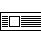
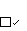

Distributed By: Virtual Labs
Dialog Boxes Explained
This section consists of a list of the different dialog boxes and a description
of the effect of each Button, text box, pop-up menu, radio buttons and check
box within the dialog box. The standard format for each entry is:
Understanding The Path Descriptor:
The Path Descriptor describes how the Dialog Box may be accessed:
A set of Braces {...} specifies the object within which the given Dialog
box is found. Path items separated by colons indicate a menu path. A final
descriptor encased in a set of parenthesis (...) indicates the Dialog box
is entered via the button whose name is listed within the parenthesis. A
final descriptor encased in a set <...> indicates the Dialog box is
entered via the item which is described within the <..>.
Standard Features of Dialog Boxes:
- Any button which is outlined may be activated by pressing the <return>
key.
An example is the button.
- The button always closes the dialog box
and saves any changes which were made while in the Dialog box.
- The button closes the dialog box and when
possible returns the program to the state it was in prior to the opening
of the dialog box. In other words, none of the changes made while in the
Dialog Box are implemented.
- The box found in the upper left hand corner
of the dialog box has the same effect as the button.
- Dialog items which have a bottom, right shadow, such as are an indication that there is a pop-up menu choice. Pop-up menu contents
are listed and their effects are described in this chapter and not in the
section on menu items.
- The symbol is associated with an editable
textbox. Clicking on this box or pressing the <enter> key will enter
the value within the textbox into the associated list. The active cell is
indicated by highlighting.
The Dialog Boxes are organized by Object and then by Menu required to access
the dialog boxes. Dialog Boxes which are activated while in another dialog
box are found immediately following the parent dialog box. Pop-up Menus
which are found in a particular dialog box are described with the relevant
dialog.
Go to Dialog List
Author: J.ames T.
Stanley
 Desktop
Manual
Desktop
Manual
Distributed By: Virtual
Labs
Last Updated: June 6,1996